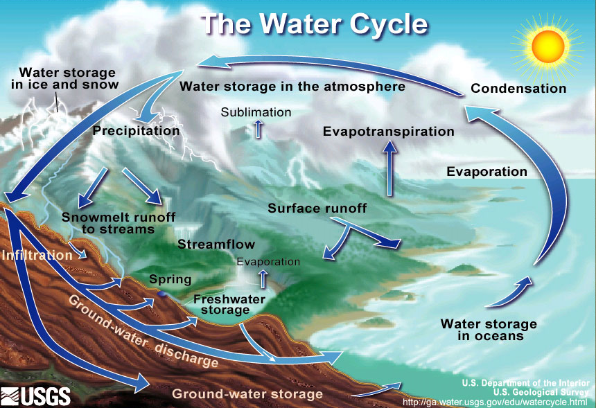

Lecture 1, Course introduction#
CE524 — Applied Hydroclimatology · CE524P — Computational Hydroclimatology Lab Vivek Gupta, School of Civil and Environmental Engineering, IIT Mandi
This first lecture sets out what the course is about, how it is organised, and what you are expected to do in it. The conceptual lecture that follows (Lecture 2) then introduces the climate system itself, and from Lecture 3 onward the course becomes hands-on, building small climate and hydrological models in Python.
Note
Module 1 coverage Lectures 1 and 2 together cover Module 1 — Introduction to hydroclimatology:
Syllabus topic |
Where it is covered |
|---|---|
Concept and scope of hydroclimatology |
L1 — What is hydroclimatology? and What does “applied” add? |
Climate change: causes and impacts |
L2 — What is climate change? → Causes: radiative forcing and Observed impacts |
Climate feedbacks; tipping points |
L2 — Climate feedbacks and Tipping points in the climate system |
Impact on the global hydrologic cycle |
L1 — The hydrological cycle and Climate change and the water cycle |
Water management in a changing climate |
L1 — Water management in a changing climate |
What is hydroclimatology?#
Hydroclimatology is the study of how the climate system and the hydrological cycle interact and influence one another over time. It sits between two established fields: climatology, which describes the long-term statistics of the atmosphere, and hydrology, which describes the movement and storage of water at and below the land surface. Hydroclimatology asks how climatic drivers — incoming solar radiation, air temperature, atmospheric circulation, and their variability — shape precipitation, evapotranspiration, snow accumulation and melt, soil moisture, streamflow, and groundwater recharge, and how changes in those hydrological quantities feed back on the climate.
What does “applied” add?#
Applied hydroclimatology takes that understanding and uses it to answer practical questions about water and climate. Typical areas of application include:
Water-resources management — planning sustainable water use from climate patterns and projections.
Flood and drought forecasting — using hydroclimatic data and models to anticipate and mitigate extreme events.
Agriculture — matching crop choice, sowing dates, and irrigation scheduling to local and regional hydroclimatic conditions.
Urban water systems — designing water supply, stormwater, and wastewater infrastructure that can cope with a changing climate.
Ecosystems — assessing environmental flows for rivers and wetlands under different climate scenarios.
Hydropower — scheduling generation against seasonal and interannual hydroclimatic forecasts.
Water quality — anticipating changes in water temperature, flow, and pollutant transport driven by climate.
Groundwater — estimating recharge and sustainable extraction under future climate.
Adaptation and policy — giving communities, industry, and government the quantitative basis for water and climate decisions.
A recurring theme is the Himalayan and Indian context: snow- and glacier-fed rivers, the monsoon, data scarcity in mountain catchments, and the exposure of Indian agriculture and infrastructure to hydroclimatic extremes.
The hydrological cycle#
Everything in this course rests on the hydrological cycle: the continuous movement of water between the ocean, the atmosphere, and the land. Solar energy evaporates water from the ocean and land surfaces; winds carry that vapour; it condenses and falls as precipitation; and the water that lands on the continents returns to the ocean as river discharge and groundwater flow, closing the loop.
{kind=link}

Fig. 1 The natural hydrological cycle: evaporation and transpiration, atmospheric transport, condensation and precipitation, surface runoff, infiltration, and groundwater flow. Figure: John M. Evans, U.S. Geological Survey, via Wikimedia Commons — public domain.#
{kind=link}
Two features of the cycle matter for everything that follows.
The global water budget. Averaged over a year, the ocean loses more water to evaporation than it gains from precipitation, while the land gains more from precipitation than it loses to evapotranspiration. The difference — of order \(4\times10^{4}\ \text{km}^3\) per year — is carried from ocean to land through the atmosphere and returned to the ocean as total global river discharge. This is the water that all of hydrology is concerned with.
Storage and residence time. The cycle moves water between reservoirs of vastly different size and turnover time. The atmosphere holds only about a week’s worth of precipitation and turns over in roughly 9 days; soil moisture and rivers turn over in weeks to months; seasonal snow in months; lakes and shallow groundwater in years to decades; deep groundwater, the deep ocean, and the great ice sheets in centuries to hundreds of thousands of years. A hydroclimatic question is really a question about one or more of these reservoirs and the fluxes that fill and drain it.
Climate change and the water cycle#
Because evaporation and precipitation are driven by energy and temperature, a change in climate is inevitably a change in the water cycle. The central thermodynamic fact is the Clausius–Clapeyron relation: the amount of water vapour the air can hold rises by about 7% per °C of warming. This has several consequences that recur throughout the course:
Intensification. A warmer atmosphere holds more moisture, so when it rains it tends to rain harder. The heaviest daily and sub-daily precipitation totals scale roughly with Clausius–Clapeyron, even though total annual precipitation rises more slowly (about 2–3% per °C), because global precipitation is limited by the atmosphere’s energy budget rather than its moisture content.
“Wet gets wetter, dry gets drier.” Enhanced moisture transport tends to add rainfall where convergence already occurs (the deep tropics, storm tracks) and remove it from subtropical dry zones, sharpening existing gradients — though over land this pattern is modified by circulation shifts.
More droughts and more floods. Higher evaporative demand dries soils between rain events, while the events themselves deliver more water in less time. The same region can see both risks increase.
From snow to rain. Warming raises the freezing level, so more mountain precipitation falls as rain, snowpack peaks earlier and smaller, and melt-fed rivers shift their seasonal timing — a first-order concern for the Himalayan rivers that supply much of South Asia.
Glacier loss. Sustained warming shrinks the glaciers of High Mountain Asia, first increasing and then reducing dry-season flow (“peak water”).
Groundwater. Where recharge falls or variability rises, users pump more, and parts of northwestern India are among the fastest-depleting aquifer systems in the world.
Monsoon. The South Asian summer monsoon is expected to deliver more total rainfall and stronger extremes in a warmer climate, but with greater year-to-year variability — a difficult combination for water management.
Water management in a changing climate#
Traditional water-resources engineering assumes stationarity: that the statistical properties of streamflow, rainfall, and floods do not change with time, so the past is a reliable guide to the future. Under a changing climate that assumption no longer holds, and design values based on a historical record can be systematically wrong.
Managing water under this uncertainty shifts the emphasis from a single “optimal” design toward plans that perform acceptably across a wide range of plausible futures:
Adaptive and robust planning — staged decisions with trigger points, and options chosen for low regret rather than peak performance in one scenario.
Integrated water resources management (IWRM) — coordinating surface water, groundwater, water quality, and demand across a basin rather than structure by structure.
Demand-side measures — efficiency, pricing, cropping choices, and reuse, which are often cheaper and faster than new supply.
Conjunctive use and managed aquifer recharge — using aquifers as buffers that are filled in wet years and drawn down in dry ones.
Reservoir re-operation — updating rule curves as inflow timing and variability change, including for hydropower and flood control.
Early warning and forecasting — extending the lead time for floods, droughts, and glacial lake outburst floods (GLOFs).
The Indian and Himalayan setting concentrates these challenges: dependence on a single monsoon season, snow and glaciers acting as natural reservoirs that are now changing, transboundary rivers, and large populations exposed to both floods and drought. The rest of the course builds the quantitative tools — climate models, hydrological models, and data analysis — needed to support these decisions.
Course structure#
The syllabus is organised into seven modules; the full list is on the course home page. In teaching order:
Module |
Theme |
|---|---|
1 |
Introduction to hydroclimatology |
2 |
Modeling |
3 |
Observation |
4 |
Hydroclimatic data processing and analysis |
5 |
Impact on hydrology, agriculture, and ecosystems |
6 |
Hydroclimatic extremes: droughts |
7 |
Hydroclimatic extremes: floods |
Note
The interactive notebooks on this site currently cover Module 2 (Modeling). They are introduced by two conceptual lectures — this one and Components of the climate system — and are then built up in Python from a zero-dimensional energy balance model to advection–diffusion in space. Material for the other modules will be added through the semester.
Assessment#
Your grade combines several components:
Mid-term examination
End-term examination
Class discussion / debate
Group project
Quizzes
Tutorials and assignments
Attendance
The weighting of each component is given in the course handout distributed in class. The companion lab course, CE524P — Computational Hydroclimatology Lab, is assessed separately and is built around the same Python toolchain used here.
Prerequisites and tools#
There is no formal prerequisite. Familiarity with any programming language (Python, R, MATLAB, …) will help, and Lecture 3 gives a short, self-contained introduction to Python for those who need it. Every notebook can be run in the browser through the 🚀 launch button (Google Colab or Binder), so no local installation is required, though instructions for a local setup are in the project README.
Resources#
Brian E. J. Rose — The Climate Laboratory, an open, interactive textbook on climate modelling in Python: https://brian-rose.github.io/ClimateLaboratoryBook/
MIT Introduction to Computational Thinking (Henri Drake’s climate lectures), the origin of several notebooks here: https://computationalthinking.mit.edu
Climate of the Ocean (Meier, Börgel & Karsten, IOW), the course this notebook collection is adapted from: florianboergel/climateoftheocean
IPCC Assessment Reports for the current scientific consensus: https://www.ipcc.ch
Full acknowledgements are on the course home page.